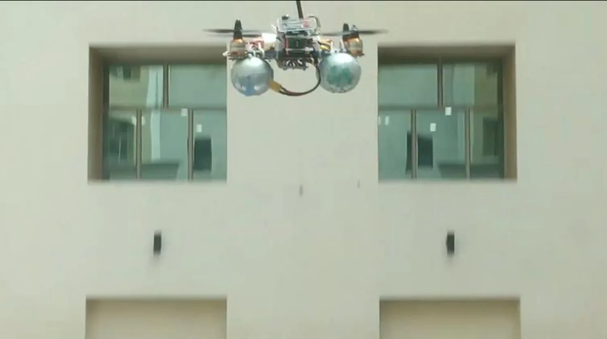

CHAPTER 01
The beginning
Before university
CURIOSITY STARTS AT HOME
For as long as
I can remember.
“I've been obsessed with computers, electronics, microcontrollers, robotics, IoT devices, and sensors.”
That interest grew through building with my father. Digital electronics, motors, batteries, small microcontrollers - and the code that made them do something.
Hobby quadcopters became RC cars, electric skateboards and a bike. Arduino robots sat alongside smart lights and a door-unlock system. I liked working on every part: the hardware, the firmware, and the interface someone would actually use.
